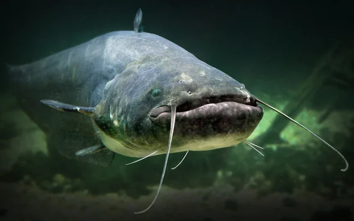

Тут буде інформація про різні методи риболовлі.
| Фото | Вид риби | Метод риболовлі |
|---|---|---|
 |
Короп | Ловля коропа на прісних водоймах — це популярний вид риболовлі, що передбачає використання спеціальних снастей, прикорму та тактики для приваблення великої риби. Найчастіше застосовують фідерні або коропові вудилища з волосінню великої міцності та бойлами або пелетсом як наживкою. Для підвищення шансів на успіх рибалки використовують підгодовування — суміші зернових, пелетсу та ароматизаторів, щоб привабити рибу в зону лову. Основне завдання — викликати довіру у коропа до насадки та дочекатися клювання, яке може бути тривалим, але часто приносить великі трофеї. |
| Щука | Ловля щуки на прісних водоймах — це популярний спосіб риболовлі, який передбачає використання штучних або натуральних приманок для вилову хижака. Найчастіше щуку ловлять на спінінг із використанням блешень, воблерів, силіконових приманок або живця. Вона зазвичай ховається в прибережних заростях, біля коряг, підводних ям та інших укриттів, звідки атакує здобич. Цей метод вимагає уважності, правильно підібраного спорядження та знання поведінки риби залежно від сезону. | |
| Окунь | Метод лову окуня на прісних водоймах зазвичай базується на активному пошуку хижака з використанням штучних приманок або живця. Окунь — хижа риба, що добре реагує на блискучі або рухливі об’єкти. Найпоширеніші способи — спінінгова ловля з використанням воблерів, твістерів, джиг-головок та блешень, а також поплавцева вудка із живцем або мотилем. Ловлять окуня зазвичай у прибережних зонах, біля корчів, водної рослинності або підводних схилів. | |
| Лящ | Ловля ляща на прісних водоймах зазвичай проводиться на донну снасть. Одним з найбільш ефективних методів є використання фідера або звичайної донки з грузилом. Найкращий час для ловлі ляща — це ранкові та вечірні години, коли риба активна. Для приваблення риби використовуються різні приманки, такі як черв'яки, мотиль, перловка або тісто. Лящ добре клює на глибинах 3–5 метрів, в місцях з м'яким дном та присутністю водоростей або інших укриттів. Варто також звернути увагу на погоду: лящ любить більш спокійні, безвітряні дні. Успіх ловлі залежить від правильного вибору місця та часу, а також точності подачі приманки. | |
|  | Сом | Ловля сома на прісних водоймах зазвичай здійснюється вночі, коли риба активно шукає їжу. Основні методи включають ловлю на живця, джигування та донку, при цьому використовуються важкі оснастки для досягнення глибоких ділянок з укриттями, такими як ями або затоплені дерева. Сом любить темні, глибокі місця, тому вибір часу та місця відіграє важливу роль у успіху риболовлі. |
Перше вересня все ближче,
З кожним роком йдемо вище.
Хоч і важко, та дарма,
Бо без праці знань нема.
Котик радо позирає
Та запрошення чекає.
Навіть гусінь - черв’ячок
Всіх вітає діточок!